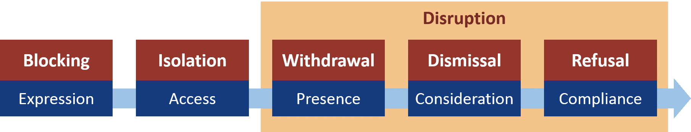

Master's Thesis Work
I developed a new theory for understanding non-listening interactions. Click here to read a detailed summary of the main ideas!
Confident speaker, skilled writer, and passionate teacher: I excel at presenting information and public speaking. I perform exceptionally well as a liason, helping communicate clearly between people with highly technical and non-technical backgrounds.
I have a BSc in psychology and am nearing completion of my marketing Master's degree. My thesis is about understanding non-listening interactions in high-conflict settings. You'll find a diagrammed summary at the project link on this page.
My recent interests have turned towards programming and computer science. I have a head for algorithms, an appreciation for well-written code, a passion for user-friendly design, and a fierce determination to solve challenging problems.
Experience: Python, JavaScript, CSS
I developed a new theory for understanding non-listening interactions. Click here to read a detailed summary of the main ideas!
Hotseat JavaScript web client for playing Quarto!

Abstract art generator using JavaScript DOM manipulation.
Responsive CSS snippet inspired by the art of Piet Mondrian.